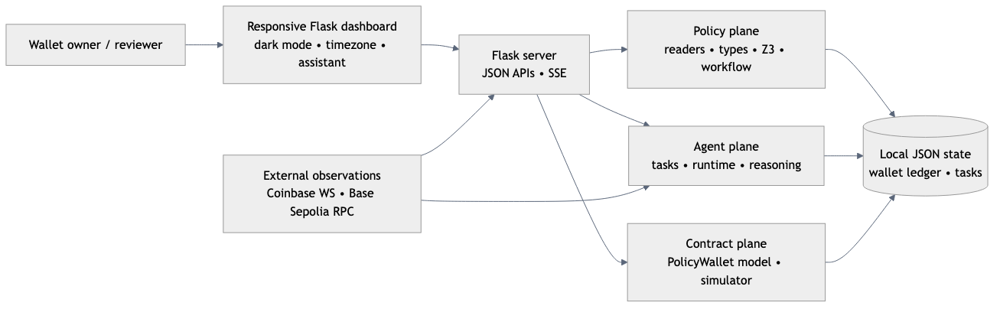
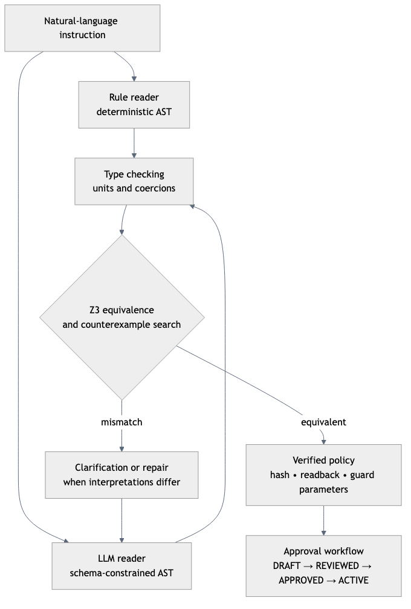
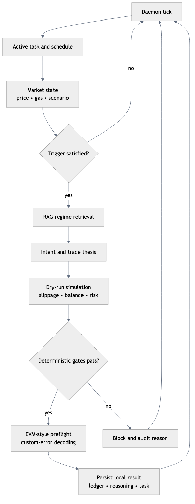
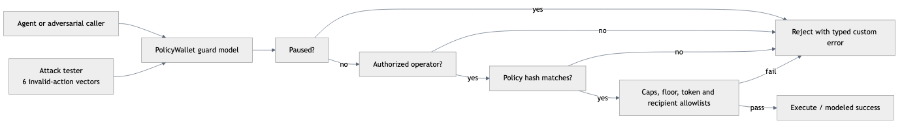
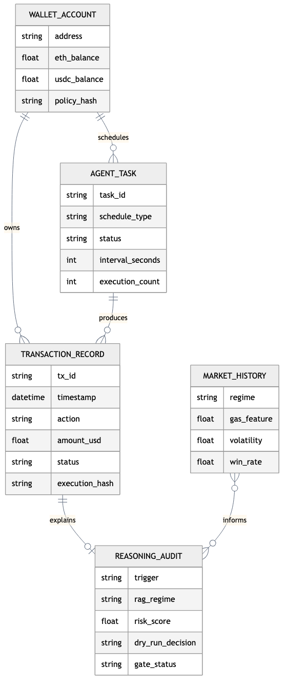

Figure 6. Desktop UI evidence.
User-Defined On-Chain Guardrails for Autonomous AI Wallets
Complete technical documentation: architecture, data flow, calculations, APIs, operations, testing evidence, and implementation boundaries.
This document describes the software that is present in the repository. It distinguishes deterministic local simulation from live blockchain execution.
| Version | Date | Change | Owner |
|---|---|---|---|
| 1.0 | 2026-10-19 | Initial complete Orvilo technical baseline derived from source inspection and executed tests. | Orvilo engineering |
Scope. This document describes the current repository, including implemented behavior, local simulation boundaries, APIs, UI behavior, operations, and test evidence. It is intended for developers, reviewers, operators, security assessors, and technical evaluators.
List of figures: system context; policy verification; runtime safety; contract guard path; logical data relationships; desktop UI; mobile UI.
List of tables: revision history; technology stack; codebase structure; logical entities; API catalog; integrations; troubleshooting; limitations; source map.
Orvilo lets a user express wallet guardrails in natural language, such as “buy ETH when gas is under 20 gwei and never let the balance fall below $500.” A deterministic reader and an untrusted schema-constrained reader produce typed policy trees. The policy package type-checks and compares them with Z3, generates a canonical readback and SHA-256 identifier, and exports guard parameters. The agent then observes market state, retrieves historical regimes, proposes intent, performs a dry run, and applies deterministic gates before changing the local wallet ledger.
Users and roles: the wallet owner edits balances, reviews policies, approves deployment, controls pause/resume, and inspects audit records. The autonomous agent evaluates one active task. A security reviewer can mark a proposal reviewed. The default mock reader and optional Groq reader are untrusted proposers, never authorities.
System boundary: the default application is a local Flask simulation. It uses JSON files, in-memory policy and security state, optional Coinbase and Ethereum RPC observations, and a Python contract model. The default flow does not sign or broadcast transactions. The Solidity contract is a deployable reference, not evidence of a deployed contract.
Example: the owner submits a policy, reviews its readback, approves it, and deploys it through the dashboard. The agent watches gas. If gas satisfies the trigger, the reasoning pipeline retrieves a regime, simulates a swap, checks the reserve floor, and either records a local confirmed swap or records a blocked attempt with the reason.

| Layer | Implementation verified in repository | Role |
|---|---|---|
| Runtime | Python; Flask 3.x compatible; main.py | Startup orchestration, CLI verification, HTTP server. |
| Policy | Python AST/readers, JSON Schema, Z3 Solver | Parse, type-check, normalize, compare, and approve policies. |
| Agent | Background loop, task store, scheduler | Evaluate schedules, retrieve market context, simulate, and record outcomes. |
| Market | Coinbase WebSocket adapter plus deterministic scenarios | Live-compatible feed boundary and reproducible test data. |
| Contract model | Solidity source, ABI/client boundary, Python simulator | Policy guards, emergency controls, typed rejection vectors. |
| Persistence | Local JSON files | Wallet ledger, agent tasks, and reasoning/market history. |
| UI | Server-rendered HTML, CSS, browser JavaScript, SSE | Responsive dashboard, dark mode, timezone selection, assistant. |
| Testing | pytest; 90 tests collected | Policy, agent, contract, API, assistant, and scorecard coverage. |
The application is a modular monolith. Flask routes coordinate policy, agent, reasoning, exchange, contract, and user modules in one Python process. This keeps local demonstrations simple while preserving explicit boundaries that can later be deployed behind a WSGI server and a production persistence layer.
Policy construction has two readers: a deterministic rule reader and an optional schema-constrained LLM reader. Both produce a normalized representation. Type checks reject incompatible units and invalid values before formal comparison. Z3 checks whether the interpretations are equivalent and can expose a counterexample when they are not.

| State | Meaning | Required transition |
|---|---|---|
| DRAFT | Candidate policy exists but is not approved. | Review |
| REVIEWED | Human or workflow review completed. | Sign and approve |
| APPROVED | Policy is approved for deployment. | Deploy |
| ACTIVE | Hash and guard parameters are active in the model. | Pause, invalidate, or replace |
| Path | Responsibility | Important symbols |
|---|---|---|
main.py | CLI policy discovery and Flask startup. | discover_and_print_policy(), main() |
flask/server.py | HTML route, JSON APIs, SSE stream, assistant actions. | create_app(), route handlers |
policy/ | Typed AST, readers, type checks, Z3 comparison, hashing, workflow. | verify_policy, PolicyWorkflowManager |
agent/ | One-task registry and background daemon. | AutonomousAgent, TaskManager |
reasoning/ | RAG, intent, dry-run, gate and report assembly. | ReasoningEngine, RiskSimulator |
exchange/ | Coinbase snapshot, synthetic fallback, scenarios, gas oracle. | ExchangeService |
contracts/ | Solidity reference, Python simulator, client, attack vectors. | PolicyWalletClient, EVMSimulator |
user/ | Wallet state and transaction JSON persistence. | UserDatabase |
tests/ | Policy, agent, exchange, reasoning, scorecard, and user tests. | 90 collected tests |
Purpose: convert language into a verified typed policy. Trigger: startup discovery or POST /api/verify. Inputs: prompt, rule reader, and the configured mock reader by default; Groq is optional. Processing: parse both readers; type-check; ask clarification for unresolved coercions; compare formulas in both directions with Z3; run sanity checks; build readback, hash, and on-chain parameters. Data: proposal is held in the workflow manager; no policy database is used. Output: VerifiedPolicy, human-review result, or rejection. Failure: parse, type, timeout, mismatch, or sanity failures fail closed or return human review. References: policy/loop.py, policy/typecheck.py, policy/compare.py.
Purpose: move a proposal through review and deployment. Trigger: review, approve, or deploy API calls. Processing: the manager changes status and the deploy step copies exported limits into the in-memory wallet client, then registers an agent task. Important boundary: the default approval signature is a generated placeholder when omitted; no EIP-712 signing is implemented.
Purpose: continuously evaluate one active task. Processing: pause check → market snapshot → trigger evaluation → RAG retrieval → intent proposal → dry run → deterministic gates → local balance and transaction update. Outputs: thought stream, task status, transaction record, reasoning report. Failure: blocked and high-risk attempts are recorded; unexpected loop exceptions are logged.

Purpose: model policy enforcement and repeat six adversarial cases. Inputs: token, recipient, amount, balance-after, caps, pause flag. Outputs: named modeled revert, gas estimate, status, and no local state mutation. The result is simulator evidence, not a chain receipt.

The wallet module stores balances and actor-attributed transactions. The market module combines Coinbase data, synthetic ticks, scenario offsets, and gas oracle state. The assistant answers state questions and dispatches bounded UI actions through the same Flask process; confirmation is used for agent pause/resume actions.
Each scheduled tick evaluates task state and market inputs. A triggered task retrieves relevant regime context, forms an intent, computes a dry-run result, evaluates deterministic safety gates, performs EVM-style preflight decoding, and persists either an execution record or a blocked explanation.
Dry-run calculations include balance impact, slippage, gas cost, reserve floor, transaction cap, daily cap, and allowlist checks. Local attack-test results represent modeled contract rejections; they are not live Base Sepolia transaction receipts.
Orvilo has no SQL database, migrations, indexes, or relational transactions. It uses three JSON stores: user/data/wallet_db.json, agent/data/agent_tasks.json, and reasoning/data/market_history.json. Each service uses a re-entrant lock around read/write operations. Malformed wallet or task JSON falls back to initialized/default state; market-history load failures log an error and use an empty list, which activates a baseline regime.

| Entity | Key fields | Operations |
|---|---|---|
| UserState | wallet address, network, balances, transactions, timestamps | initialize, read, reset, update |
| TransactionRecord | id, actor, action, amount, token, status, hash, reason, report | prepend; lookup by id or hash |
| AgentTask | policy hash, status, triggers, invariants, schedule, count | register, stop, rerun, delete, persist |
| HistoricalRegime | conditions, metrics, recommendation | load, overwrite, retrieve |
There is no authentication, version prefix, pagination, webhook, or CORS policy in the Flask routes. JSON errors generally return HTTP 400 for workflow exceptions; many action routes return the domain result directly.
| Method and path | Purpose and input | Response / status |
|---|---|---|
GET / | Render dashboard. | HTML 200. |
GET /api/market/live | Market snapshot and chart history. | JSON 200. |
POST /api/market/scenario | scenario. | Scenario result. |
GET /api/market/stream | One SSE event per second. | Open text/event-stream. |
GET/POST /api/user/wallet | Read or set ETH/USDC/WETH; optional log_transaction. | User state JSON. |
GET /api/wallet/balances | Read balances. | Balance object. |
GET/POST /api/user/transactions | Read or add transaction records. | Ledger JSON. |
POST /api/user/reset, /api/simulation/reset | Reset local state. | Reset result. |
POST /api/verify | prompt; run policy verification. | Verified/review/rejected JSON. |
POST /api/validate_intent | trade_usd, gas_gwei, execute. | Guard result; execution mutates local JSON only. |
GET /api/policy/workflow | Current and recent in-memory proposals. | Workflow JSON. |
POST /api/policy/review|approve|deploy | proposal_id plus reviewer/approver/signature where applicable. | Proposal or HTTP 400 error. |
GET /api/agent/status | Agent state, task, thoughts. | Status JSON. |
GET/POST/DELETE /api/agent/task | Read/register/delete task. | Task JSON. |
POST /api/agent/task/stop|rerun|deploy|delete | Task id/action control. | Task action result. |
POST /api/agent/pause|resume|schedule | Agent control or scheduled transfer fields. | Control/task result. |
GET/POST /api/contract/security-status, controls | Pause, unpause, revoke operator/allowance, invalidate policy. | In-memory security result. |
POST /api/simulation/simulate | Trade, token, recipient. | Simulation guards and result. |
GET/POST /api/contract/attack-test/* | List or run vector id. | Modeled attack verdict. |
POST /api/assistant/chat | message and optional confirmation. | Natural-language reply plus bounded action result. |
For a proposed USD trade T, current USDC B, reserve floor F, per-transaction cap C, daily spend S, and daily cap D, the local checks are: B - T ≥ F; T ≤ C; and S + T ≤ D. Inputs come from wallet JSON, policy parameters, and the proposed task. Example: B=$1,500, T=$200, F=$500 gives $1,300 ≥ $500, so the floor passes. Values use Python floats in the wallet/simulator layers; policy compilation itself uses exact Fraction and Z3 reals.
Base slippage is 0.05%; if gas exceeds 40 gwei, 0.15 percentage points is added. Effective price is P × (1 + slippage/100); estimated ETH is T / effective_price; post-swap USDC is B - T. The simulator rounds ETH to five decimals, USDC to two, and report fields to their model precision. A high-risk regime is risk score ≥ 7, expected return < -2%, HIGH risk, or HALT_TRADING.
Each historical regime receives a weighted score: gas compatibility × 0.45 + price-range score × 0.35 + scenario/trend score × 0.20. The highest score is returned. If no regimes exist, a baseline result with similarity 0.75, win rate 0.70, expected return 2.0%, and risk score 3.0 is used.
The Solidity reference computes dayIndex = block.timestamp / 1 days. When the day changes, it resets spentTodayUsd; it then rejects if the proposed cumulative total exceeds dailyCapUsd. This behavior is represented locally by the simulator inputs, not by a deployed chain in the default run.
| Integration | Connection and data | Fallback / limits |
|---|---|---|
| Coinbase Exchange | WebSocket wss://ws-feed.exchange.coinbase.com, ETH-USD ticker. | Reconnect backoff; synthetic ticks while disconnected. |
| Ethereum/Base RPC | Web3 HTTP provider; optional BASE_SEPOLIA_RPC; eth_call and gas estimate. | Offline deterministic simulator fallback; no transaction submission. |
| LLM reader | Offline mock by default; optional Groq HTTP JSON completion using LLM_BASE_URL, API key, model, and schema guide. | Mock requires no network; Groq retries 429 and non-200 responses. |
| spaCy model | Local deterministic dependency parsing. | Required dependency for rule reader. |
The server renders flask/templates/index.html. JavaScript calls the APIs above, updates dashboard panels, consumes SSE chart events, stores theme and timezone preferences in local storage, and displays policy, security, attack, activity, and reasoning surfaces. Beijing time (Asia/Shanghai) is the default. The floating assistant is fixed above the mobile bottom navigation. Dark-mode semantic surfaces cover policy, contract, and attack sections. UI screenshots are included below.

No login, session, bearer token, CSRF protection, or route authentication is implemented. The UI is intended for local demonstration. Application-level labels identify owner, reviewer, and agent, while contract reference code has owner/operator modifiers. The Python client does not cryptographically authenticate requests. Do not expose the default server to an untrusted network or use it with real funds.
cd "/Users/dipro/Bangla Rag/Hack/WalletAgent"
python3 -m venv .venv
.venv/bin/python -m pip install -r requirements.txt
cp .env.example .env
PYTHONPATH=. .venv/bin/python main.py --cli-only
PYTHONPATH=. .venv/bin/python main.py --host 127.0.0.1 --port 5001Verify with curl -fsS http://127.0.0.1:5001/api/market/live and curl -fsS -o /dev/null -w "%{http_code}\n" http://127.0.0.1:5001/. The application initializes local JSON files when absent. There are no migrations.
Implemented configuration includes LLM_PROVIDER=mock by default, optional Groq variables (GROQ_API_KEY, LLM_MODEL, LLM_BASE_URL), and BASE_SEPOLIA_RPC. Other blockchain values in .env.example are reference settings unless explicitly read by a module. Docker support and GitHub Actions CI are now present; there is still no production WSGI manifest, backup job, migration order, or rollback automation. A production topology requires TLS, process supervision, authenticated access, durable storage, signer custody, observability, and chain reconciliation.
Executed verification for this documentation baseline: .venv/bin/python -m pytest -q returned 90 passed. Tests cover policy AST/typechecking/reader/loop behavior, agent lifecycle, exchange behavior, reasoning, scorecard features, and user database operations. They do not prove deployed bytecode, production security, or live receipts.
The agent, Coinbase listener, and gas oracle use daemon threads; locks protect shared state. The market stream emits once per second. Coinbase reconnects with bounded exponential backoff and generates synthetic ticks while disconnected. The optional Groq adapter retries transient HTTP failures. JSON writes are whole-file rewrites under locks. No queue, cache, database transaction, rate limiter, resource quota, or measured throughput benchmark is implemented.
| Symptom | Diagnosis | Resolution |
|---|---|---|
| Port unavailable | Another process owns the port. | Use another port such as 5001 and verify with the printed URL. |
| Market says disconnected | Coinbase WebSocket unavailable. | Expected fallback behavior; inspect logs and network, or use a scenario. |
| Groq failure | Missing key, provider response, or timeout. | Use LLM_PROVIDER=mock for offline operation; check key and endpoint. |
| Task not executing | Trigger, pause flag, risk, or invariant blocked it. | Inspect /api/agent/status and the transaction reason. |
| State reset needed | Demo data is stale. | POST to /api/user/reset or /api/simulation/reset. |
| Corrupt JSON | File cannot be decoded. | Back up the file, then allow the service’s default initialization behavior. |
| Implemented now | Incomplete or absent | Practical effect |
|---|---|---|
| Typed policy verification and local guard model. | Live policy deployment and receipt reconciliation. | No proof that local results match deployed state. |
| JSON wallet/task/history stores. | Transactional database, migrations, backups. | Single-process demo only; concurrent durability is limited. |
| Mock and Groq readers. | Other named providers and production model governance. | Provider choice is narrow. |
| Owner/operator concepts in model. | HTTP authentication and cryptographic request authorization. | Unsafe for public deployment. |
| Six modeled attack vectors. | Independent audit and live penetration evidence. | Modeled reverts are not security certification. |
AST: typed abstract syntax tree. RAG: retrieval of historical market regimes. SSE: server-sent events. Guard: deterministic rule that can block an action. Modeled revert: simulator rejection, not a mined transaction result.
| Claim | Evidence |
|---|---|
| Startup and route registration | main.py, flask/server.py |
| Policy verification | policy/loop.py, policy/compare.py, policy/typecheck.py |
| Agent execution | agent/runtime.py, agent/task.py |
| Calculations and RAG | reasoning/dry_run.py, reasoning/rag.py, reasoning/engine.py |
| Contract reference and modeled attacks | contracts/PolicyWallet.sol, contracts/simulator.py, contracts/attack_tester.py |
| Persistence | user/db.py, user/models.py, agent/task.py |
| Tests | tests/; 90 passed in the executed local run |